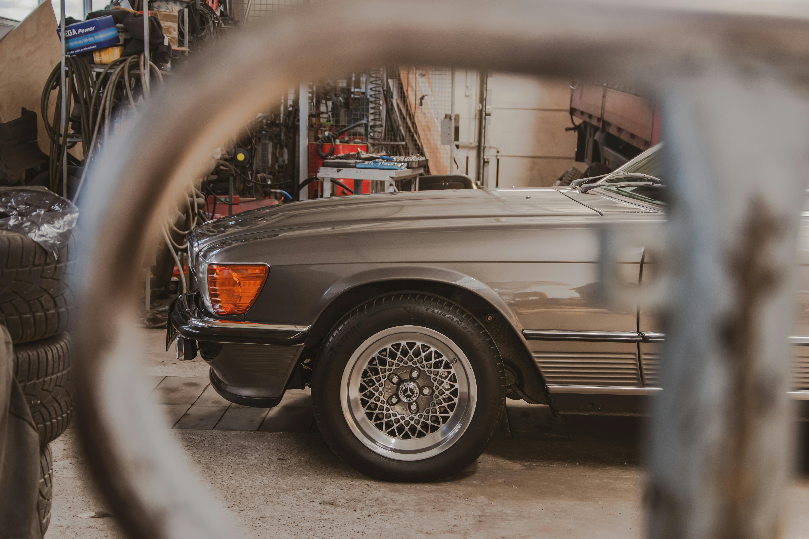

Intro
Een digitaal onderhoudsboekje klinkt voor sommige mensen nog alsof het alleen interessant is voor nieuwe auto's met dealerhistorie en keurige service-intervallen. In de praktijk is het juist veel breder. Het is handig voor de motorrijder met een RSV Mille, voor de eigenaar van een youngtimer die al drie keer van setup is veranderd, voor de gezinsauto die gewoon netjes moet blijven draaien en voor de klassieker waarvan je elk detail wilt bewaren. Zodra je onderhoud, kosten, documenten en historie serieus neemt, merk je dat papier en losse notities snel beginnen te knellen.
Daar zit ook meteen het echte probleem. Het gaat zelden mis omdat iemand helemaal niets bijhoudt. Het gaat mis omdat alles nét ergens anders staat. Een APK-rapport in de mail. Een onderdelenbon in een map. Een foto van remschijven in je telefoon. Een kilometerstand op een notitieblaadje. Een Excel-bestand dat ooit slim leek maar nu al maanden niet is bijgewerkt. Je hebt informatie genoeg, maar geen overzicht.
Een goed digitaal onderhoudsboekje maakt daar een centraal systeem van. Niet als stoffige administratie, maar als een bruikbaar voertuigarchief. Juist daarom zoeken steeds meer mensen op termen als digitaal onderhoudsboek auto, digitaal onderhoudsboek motor, online onderhoudsboekje en onderhoud digitaal bijhouden. Het gaat niet om digitaliseren om het digitaliseren. Het gaat om rust, duidelijkheid en een historie die je later echt kunt gebruiken.
Artikel
Waarom papieren onderhoudsboekjes verdwijnen
Het klassieke onderhoudsboekje had ooit een duidelijke rol. Een paar stempels, wat beurten ingevuld en klaar. Alleen past dat model steeds minder goed bij hoe voertuigen nu worden gebruikt en onderhouden. Niet omdat papier ineens waardeloos is, maar omdat het zelden compleet genoeg blijft.
Een papieren boekje is kwetsbaar. Het raakt kwijt, het blijft in het dashboardkastje liggen, het wordt nat, het wordt vergeten bij een beurt of het verhuist ergens mee in een map die niemand later nog terugvindt. En zelfs als het boekje nog bestaat, is het vaak onvolledig. Een stempel zegt meestal dat er iets is gebeurd, maar niet wat exact, met welke onderdelen, tegen welke kosten en of er nog foto's of extra documenten bij horen.
Daarbovenop komt dat veel onderhoud helemaal niet meer netjes in één dealerstroom verloopt. Motorrijders doen zelf kettingonderhoud, olie en remblokken. Youngtimer-eigenaren laten een specialist het ene doen en sleutelen zelf aan het andere. Een gezinsauto krijgt soms banden bij een bandenzaak, een beurt bij de garage en kleine klussen thuis. Dan brokkelt het idee van één papieren boekje vanzelf af.
Hetzelfde geldt voor verkoop. Op papier heb je misschien een boekje en wat losse bonnetjes, maar voor een koper voelt dat al snel rommelig. Niemand vindt het prettig om door een map met uitgeprinte facturen, een paar screenshots en halve notities te moeten puzzelen. Een complete digitale onderhoudshistorie geeft dan direct meer vertrouwen. Niet omdat het moderner oogt, maar omdat het duidelijker is.
Wat is een digitaal onderhoudsboekje precies?
De simpele uitleg is: een digitaal onderhoudsboekje is een online plek waar je alles rondom onderhoud en voertuiggeschiedenis centraal bewaart. Dat betekent niet alleen servicebeurten, maar ook reparaties, kilometerstanden, verbruik, facturen, foto's, onderdelen, keuringsdocumenten en upgrades.
Belangrijk is het verschil tussen dealerhistorie en een eigen digitaal onderhoudsboek. Dealerhistorie laat meestal alleen zien wat binnen dat merk- of dealernetwerk is gedaan. Dat is nuttig, maar beperkt. Je eigen onderhoud, een beurt bij een specialist, circuitchecks, restauratiefoto's of een set aangepaste veren zie je daar meestal niet in terug. Precies daarom is een eigen online onderhoudsboekje zo interessant.
Voor motoren is dat bijna vanzelfsprekend. Veel onderhoud gebeurt buiten dealerkanalen. Voor youngtimers en klassiekers geldt hetzelfde, alleen dan nog sterker. En voor hobbyauto's, projectvoertuigen en trackdaymachines is dealerhistorie vaak sowieso niet het relevante verhaal. Daar wil je juist weten wat jij of een specialist hebt gedaan, wanneer, met welke onderdelen en waarom.
Als je dat goed doet, krijg je geen droge administratie maar een digitale geschiedenis. Een voertuigdossier waar je later echt op kunt terugvallen. Wil je vooral voor motoren eenzelfde aanpak, dan sluit onderhoudsboekje motor daar logisch op aan.
Voor wie is een digitaal onderhoudsboek interessant?
Motorrijders
Motorrijders zijn vaak al gewend om onderhoud actiever te volgen. Olie, remmen, banden, ketting, vering en accessoires krijgen vaker aandacht dan bij een doorsnee auto. Alleen de administratie blijft vaak achter. Wie structureel motor onderhoud wil bijhouden, merkt snel hoe prettig één centrale tijdlijn is.
Youngtimer-eigenaren
Bij youngtimers draait veel om historie. Niet alleen de dealerstempel, maar vooral het verhaal erachter. Voor een BMW E46, Subaru Impreza GT Turbo of Volvo 850 T5 wil je onderhoud, revisies, roestwerk, upgrades en onderdelenkeuzes kunnen terugzien. Daar helpt zowel de pagina over een digitaal onderhoudsboekje voor je youngtimer als de gids over youngtimer onderhoud bijhouden bij, maar een diepere blogcontext maakt duidelijk waarom dat zo waardevol is.
Klassieke auto's en oldtimers
Bij oldtimers telt documentatie vaak bijna net zo zwaar als de technische staat. Juist daarom past een digitale opbouw goed bij oldtimerhistorie bewaren. Restauraties, revisies, onderdelenjacht en foto's horen allemaal in dezelfde lijn terug te komen.
Trackday- en circuitrijders
Voor circuitgebruik wordt onderhoud intensiever en technischer. Vloeistoffen, remblokken, banden, hittecycli, kettingsets en setup-wijzigingen volgen elkaar sneller op. Dan wordt een digitaal onderhoudsboekje niet alleen handig, maar bijna noodzakelijk als je nog wilt weten wat wanneer is gebeurd.
Zelfsleutelaars
Wie zelf sleutelt, heeft vaak juist de meeste inhoudelijke kennis van zijn voertuig. Alleen blijft die kennis te vaak in het hoofd of in losse foto's hangen. Een digitale registratie maakt zelf gedaan werk aantoonbaar en bruikbaar.
Gezinsauto's
Ook een dagelijkse auto heeft baat bij structuur. APK, banden, grote beurt, remmen, ruitenwissers, accu en verbruik lijken misschien minder romantisch, maar je wilt nog steeds weten wat er is gedaan en wat eraan komt.
Welke gegevens wil je eigenlijk bijhouden?
De meeste mensen onderschatten hoeveel losse informatie ze over één voertuig verzamelen. In een goed digitaal serviceboekje wil je minimaal dit soort dingen kwijt kunnen:
- Onderhoud: beurten, olie, filters, remmen, ketting, banden, vloeistoffen, kleppen, bougies.
- Reparaties: van kleine fixes tot grotere revisies.
- Kilometerstanden: de ruggengraat van elke onderhoudshistorie.
- Verbruik: handig om trends, actieradius en kosten te volgen.
- Documenten: APK, keuringsrapporten, garantiestukken, werkplaatsfacturen.
- Facturen en bonnetjes: zodat onderhoud aantoonbaar blijft.
- Foto's: voor-na, detailbeelden, schadeherstel, restauratie en upgrades.
- Upgrades en modificaties: uitlaten, vering, remmen, tuning, accessoires, cosmetische ingrepen.
Het grote voordeel is niet dat je meer gaat registreren om het registreren. Het voordeel is dat je het later echt kunt terugvinden. En dat is precies waar losse spreadsheets vaak vastlopen. Wie nu nog twijfelt tussen een digitaal systeem en een spreadsheet, heeft vaak iets aan de vergelijking met onderhoud bijhouden in Excel.
Waarom een goede onderhoudshistorie geld waard is
Een onderhoudshistorie is niet alleen handig voor jezelf. Het is ook economisch relevant. Dat geldt voor motoren, klassiekers, youngtimers en zelfs gewone auto's. De reden is simpel: vertrouwen verkoopt.
Een koper die een duidelijke, consistente historie ziet, hoeft minder aannames te doen. Die ziet wanneer het onderhoud is gedaan, welke onderdelen zijn gebruikt en wat de logica van het voertuigverhaal is. Daardoor ontstaat minder discussie over de staat van de motor of auto. Je hoeft minder uit je geheugen te verkopen en meer vanuit aantoonbare feiten.
Bij bijzondere voertuigen weegt dat nog zwaarder. Een digitale historie van een circuitmotor, een klassieker of een goed bijgehouden youngtimer laat zien dat de eigenaar serieus met het voertuig is omgegaan. Dat geeft rust, en rust vertaalt zich opvallend vaak naar een betere onderhandelingspositie. Niet magisch, wel praktisch.
Daarom sluiten ook artikelen als hoe een complete onderhoudshistorie de verkoopwaarde verhoogt en de verborgen waarde van een goed gedocumenteerde motor hier logisch op aan.
Digitaal onderhoud bijhouden zonder Excel-chaos
Excel is vaak stap één. Dat is begrijpelijk. Iedereen kent het, je kunt snel kolommen maken en voor een paar regels werkt het prima. Alleen komt vrijwel iedereen op hetzelfde punt uit: zodra je langer dan een paar maanden bezig bent, begint het te wringen.
Excel heeft geen natuurlijke structuur voor documenten en foto's. Je kunt links plakken, maar dat blijft omslachtig. Mobiel invoeren voelt zelden prettig. Mappen met bestanden blijven los bestaan. En een echte tijdlijn ontstaat niet vanzelf. Daardoor krijg je uiteindelijk een overzicht dat technisch wel bestaat, maar praktisch niet lekker werkt.
Voor planmatig onderhoud merk je hetzelfde. Een schema in Excel kan, maar zodra je meerdere voertuigen of verschillende onderhoudsritmes hebt, wil je meer overzicht. Daarom zijn ook pagina's zoals een onderhoudsschema en een onderhoudsapp logische vervolgstappen in dezelfde zoektocht.
Hoe GarageBook hierin past
GarageBook is in dat verhaal geen abstract softwarepakket, maar gewoon een praktische oplossing voor mensen die hun voertuigen serieus nemen. Je kunt voertuigen toevoegen, onderhoudslogs maken, documenten koppelen, kosten registreren, verbruik bijhouden en alles terugzien in één tijdlijn. Dat werkt op mobiel en desktop, en het is juist prettig als je meerdere voertuigen hebt die elk hun eigen ritme en geschiedenis hebben.
Voor de een betekent dat één nette plek voor een daily driver. Voor de ander is het een digitale garage met een motor, een hobbyauto en een oldtimer naast elkaar. En voor weer iemand anders is het vooral het voordeel dat foto's, facturen en upgrades eindelijk niet meer los van het onderhoud leven. Dat is ook precies waarom GarageBook op een natuurlijke manier samenkomt met thema's als waarom universele onderhoudsboekjes achterhaald raken en waarom losse onderhoudsmethodes zo vaak misgaan.
Als je gewoon wilt beginnen, hoeft het niet groot te voelen. Voertuig aanmaken, een paar bestaande onderhoudsmomenten toevoegen, belangrijke facturen uploaden en vanaf nu consequent loggen. Dat is genoeg om van losse administratie naar een bruikbaar digitaal onderhoudsboekje te gaan.
Praktijkvoorbeelden
RSV Mille
Bij een RSV Mille wil je olie, remvloeistof, banden, ketting, vering en eventuele upgrades goed terugzien. Zeker als je een motor hebt die niet alleen rijdt, maar ook een verhaal heeft.
Youngtimer
Bij een youngtimer draait het vaak om combinatiebeheer: regulier onderhoud, revisies, upgrades, specialistisch werk en bewijs. Daar komt de kracht van een centrale onderhoudshistorie echt naar voren.
Gezinsauto
Bij een gezinsauto hoeft het niet romantisch te zijn om nuttig te zijn. Banden, APK, remmen, accu, vloeistoffen en grote beurten wil je gewoon overzichtelijk terugvinden zonder gedoe.
Circuitmotor
Een circuitmotor vraagt om discipline. Onderhoudsintervallen liggen korter, slijtage gaat sneller en setup-wijzigingen tellen mee. Dan is een digitale tijdlijn bijna onmisbaar.
Oldtimer
Een oldtimer leeft van zijn geschiedenis. Onderdelen, revisies, restauratiefoto's en specialistische facturen vormen samen het verhaal dat de auto of motor geloofwaardig maakt.

Meer lezen over digitaal onderhoud en historie
Wil je dieper de praktijk in, lees dan ook meer over onderhoudsboekje motor, hoe je structureel onderhoud bijhoudt, wanneer een onderhoudsschema helpt, waarom Excel uiteindelijk gaat knellen, hoe een onderhoudsapp je workflow verbetert en waarom een youngtimer met een digitale historie vaak overtuigender overkomt.
Veelgestelde vragen over digitale onderhoudsboekjes
Wat is een digitaal onderhoudsboekje precies?
Een digitaal onderhoudsboekje is een online plek waar je onderhoud, kilometerstanden, documenten, kosten, foto's en voertuiggeschiedenis centraal bewaart per voertuig.
Is een digitaal onderhoudsboekje alleen voor auto's?
Nee. Het werkt net zo goed voor motoren, youngtimers, oldtimers, hobbyauto's, gezinsauto's en voertuigen die je gebruikt voor circuit- of trackdaywerk.
Waarom is een digitaal onderhoudsboekje handiger dan Excel?
Omdat Excel snel onoverzichtelijk wordt zodra je meerdere voertuigen, documenten, foto's, mobiele invoer en een duidelijke tijdlijn wilt combineren.
Kan ik ook eigen onderhoud en upgrades registreren?
Ja. Juist zelf uitgevoerd onderhoud, revisies, accessoires en modificaties zijn waardevol om vast te leggen met datum, kilometerstand, onderdelen en bewijs.
Helpt een digitale onderhoudshistorie bij verkoop?
Ja. Een complete digitale onderhoudshistorie geeft vertrouwen, voorkomt discussie en helpt om onderhoud, kosten en investeringen beter te onderbouwen.
Kan ik meerdere voertuigen in één account beheren?
Ja. Met GarageBook kun je meerdere voertuigen beheren en per voertuig een eigen tijdlijn, onderhoudshistorie, documenten en kostenoverzicht opbouwen.
Houd je onderhoud digitaal bij zonder losse eindjes
Wil je af van bonnetjes, losse Excel-lijsten en versnipperde voertuiginformatie? Begin vandaag nog met GarageBook en bouw een onderhoudshistorie op die je echt kunt gebruiken.